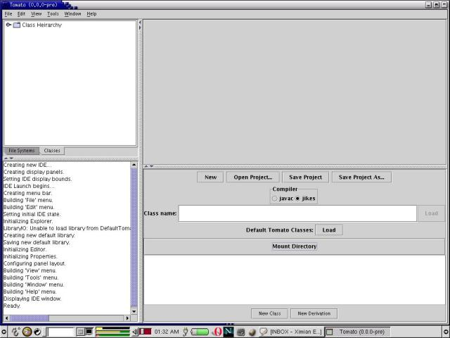
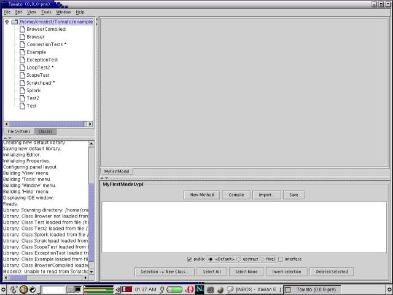

Once Tomato is started and the splash screen has vanished, you'll see something
like this:
The window is divided into four quadrants.
The upper left is the Explorer. The Explorer lets you browse filesystems,
select visual source files for editing, create new files, and select classes
to load.
The lower left is the Log. The Log records system messages.
The upper right is the Editor. Visual programming language source
code -- called "Models" -- are edited here.
The lower right is for Properties. Context-sensitive settings are
changed here.
The four quadrants can be resized via the divider bars, or via the "View"
and "Windows" main menu options.
A mouse click anywhere in the Explorer will display the current project
settings in the Properties quadrant:

The Compiler has been set to Jikes in this example. If you don't
have the Jikes compiler, leave the setting at its default "javac".
Before you can load existing visual source files or create new ones, you'll
need to mount a directory. Click on the "Mount Directory" button in
the Properties quadrant.
A dialog box like will appear like the one shown below. Select an
appropriate directory. For now, we recommend mounting the 'examples'
subdirectory from the directory in which you installed Tomato.
By clicking on the "File Systems" tab in the Explorer, you can see the
newly-mounted directory. Double-click on it to open it.
You can right-click on each of the files to display the available options:
If you select "Edit" (or double-click on an entry), the Model will be loaded
into the Editor quadrant. Its properties will be shown in the Properties
quadrant.
The scrollbars in the Editor quadrant can be used to reposition the view.
Alternatively, you can click and drag on the Editor's background and
slide the view. In this example, move down a bit to expose the "newBrowser"
method in the "Browser" model.
Now click on the green arrow in the "newBrowser" method. This causes
execution to start at that point.
After a few moments (depending on the speed of your Internet connection),
you will see a Web page appear in a window:
The example implements a very simple Web browser.
Select "New Class" from the menu. A dialog box, asking you for the
new class name, will appear:
Enter a suitable class name. In this example, we've used "MyFirstModel".

The new model appears as an empty tab in the Editor quadrant. Select the "Classes" tab in the Explorer quadrant.
Double-click on the 'int' class:
A visual representation of the class appears in the Editor quadrant. Options
associated with the class appear in the Properties quadrant:
Now click on the "Methods" tab in the Properties quadrant. This displays
all methods supported by the selected class:
Double-click on the "toHexString" method, as shown above.
The method will appear as a connector on the selected class.
Click on the connector. Several classes will automatically appear -- those necessary to invoke the 'toHexString' method:
Click and drag the classes to arrange them into a more palatable form:
Double click on the Rjava.lang.String connector. This represents
the return value from the 'toHexString' method invocation.
Now type an integer value into the java.lang.Integer class on the left:
Press the green arrow to invoke the method. In the example, the value
123 has been converted to 7b.
TO BE CONTINUED...